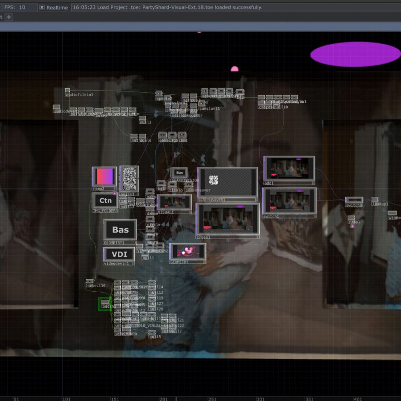
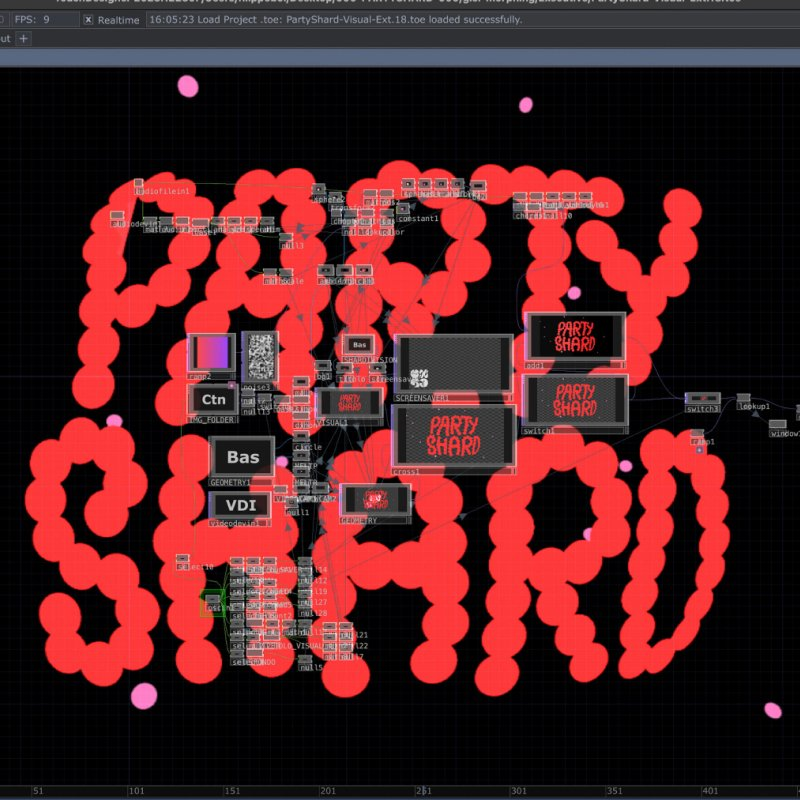
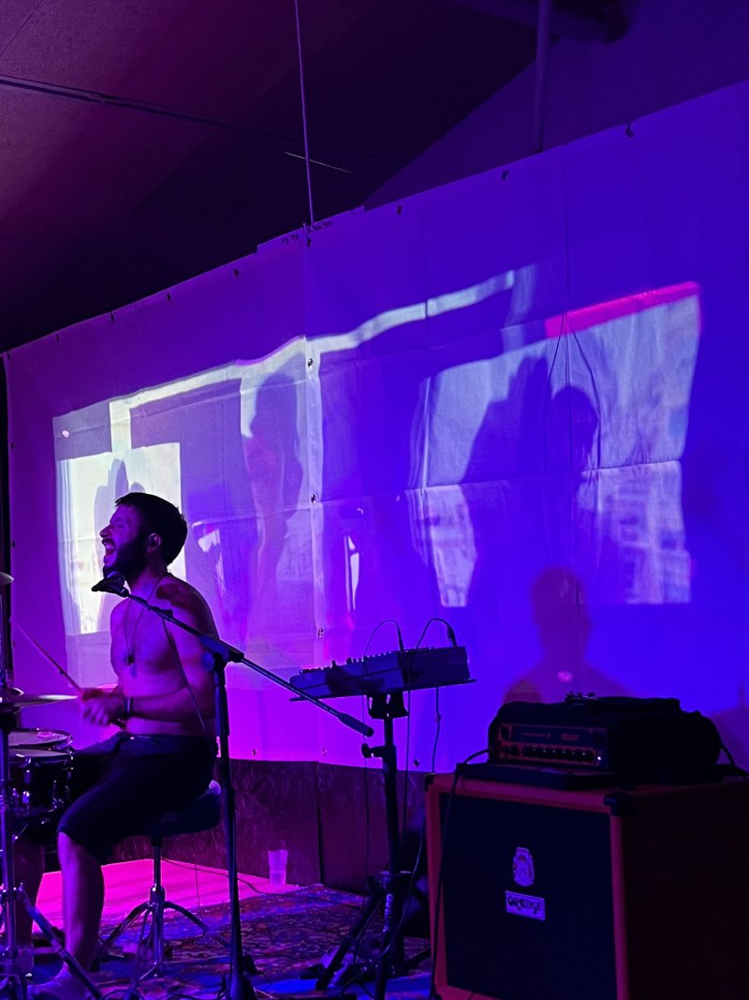

Party SHRD
Visual system design and live visuals for festival

Movement, sound and image influencing each other.
Party SHRD was born for a multi-stage festival of the Atlantide Dischi label. The task was not to accompany the music with images — it was to build a reactive visual system capable of responding to the rhythm and atmosphere of the live in real time.
Two stages, 13 artists with different stylistic identities, two days for setup and technical rehearsals. The visual becomes gesture: a parallel performance in which the system pulses, adapts and binds to the sound.
"A TouchDesigner patch controlled via OSC from the phone — the stage managed remotely, in real time, with a finger."
Three boxes projected different images for each artist, in a surreal spatial scenario. Generative patterns and dynamic geometric solids alternated building a visual language that changed skin thirteen times without losing coherence.
The real complexity was elsewhere: managing two stages simultaneously, putting one stage on standby with a screen saver effect to direct the audience's attention to the other. A visual direction system as much as a generation system.






When the system is active the stage has no background — it has a skin. The visuals react to the rhythm, transform with the atmosphere, change register from one artist to another.
The audience doesn't separate music from image: they experience them as a single sensory surface.
Remote control via OSC made the control fluid and immediate — every variation was a real-time choice, not a programmed sequence. The standby stage with the generative screen saver never completely switched off: it stayed alive, waiting, part of the same system.

